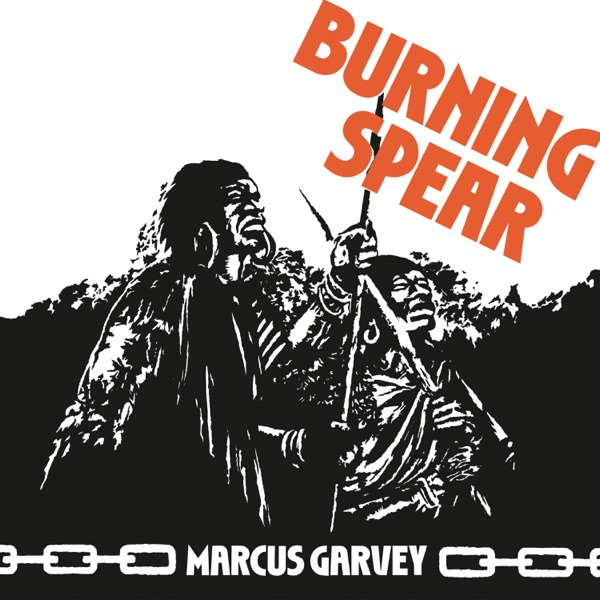
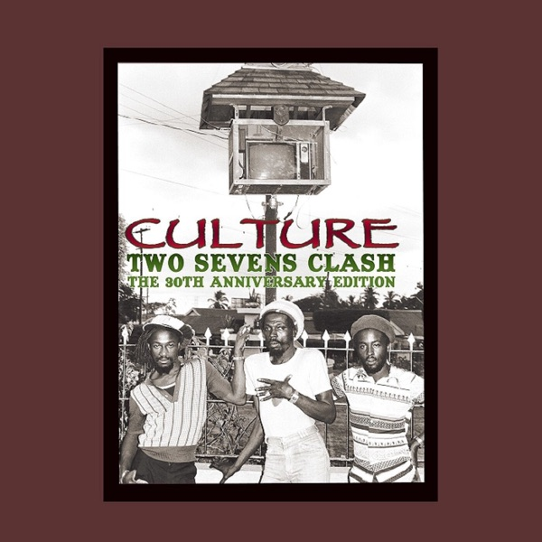
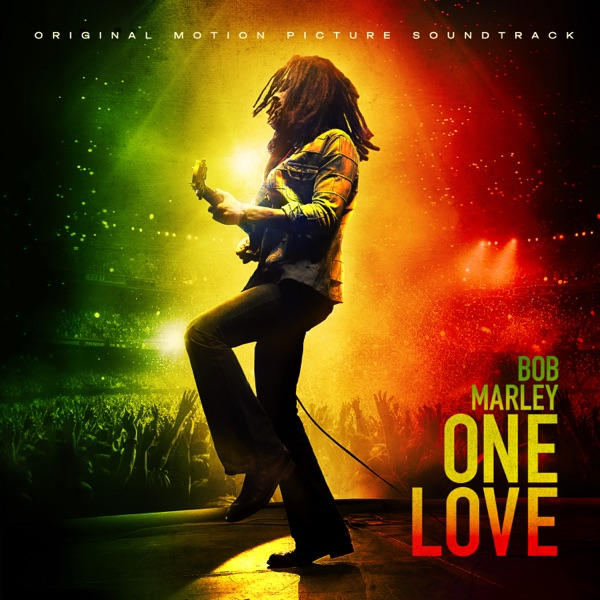
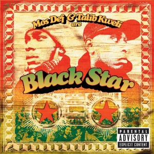
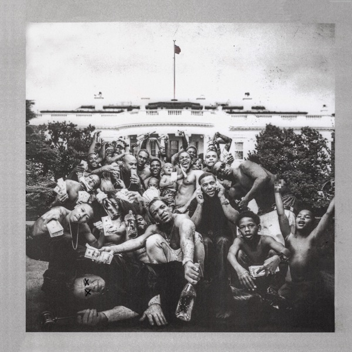
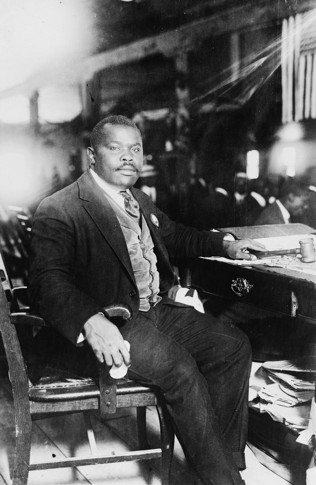
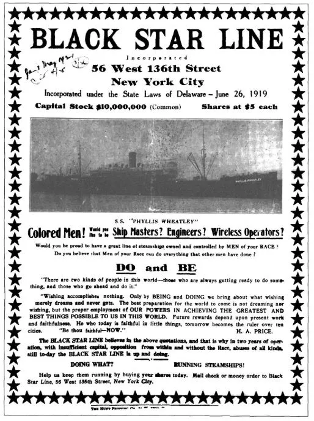

"Marcus Garvey
in the Media"
Lesson 01 · 06
Plate 01 / 15
“
Introduction to the tradition
"Pan-
Africanism"
The idea that turned one man into a movement of millions. It was older than him, and it isn't finished.
"PAN-AFRICANISM"·"BLACK STAR"·UP, YOU MIGHTY RACE·AFRICA FOR THE AFRICANS·"REDEMPTION"·TWO SEVENS CLASH·ONE AIM · ONE GOD · ONE DESTINY·
"PAN-AFRICANISM"·"BLACK STAR"·UP, YOU MIGHTY RACE·AFRICA FOR THE AFRICANS·"REDEMPTION"·TWO SEVENS CLASH·ONE AIM · ONE GOD · ONE DESTINY·
Garvey · UNIA parade · 1924 · PD
Plate 02 / 15
[ 00–05 min ]
Welcome · ESC Trinidad
Tonight, in four moves
One idea,
and the tradition
it belongs to.
- 01 · Watch
- 02 · Read it
- 03 · Listen
- 04 · Where you stand
for the tourist and the purist · at once
Hosts: Humphrey & Spade
Live greeting c/o ESC, T&T
Plate 03 / 15
[ 05–09 min ]
Watch · ESC Trinidad
Roll the reel
You already
know him.
Reel c/o Dr. Humphrey
Black Star Archive · Vimeo
Plate 04 / 15
[ 09–14 min ]
Discuss
Before we name it
What did you
just see?
- That man built a navy. From Harlem. Start there.
- What hit first: the uniforms, the ships, or the nerve?
- Real talk, how much of this made your textbook?
Plate 05 / 15
[ 14–18 min ]
Teach
Define the term
So what is
"Pan-Africanism"?
A tradition of Black global solidarity: that African people, scattered across the water, share a destiny, and can build a world of their own.
Fig. · the flag, in three bars
Red · Black · Green
Plate 06 / 15
[ 18–24 min ]
Read it together
“
△ 3%
Primary source · the readymade
All men, women and children of our blood, free citizens of Africa.
Declaration of Rights of the Negro Peoples of the World · UNIA convention · 1920
- Who is the "we," and who gave them the right to declare it?
- Where have you heard language like this before? (1776?)
Declaration of Rights · UNIA · 1920
c/o Dr. Humphrey · archive
Plate 07 / 15
[ 24–32 min ]
The tradition
A Caribbean thread
It ran through
Trinidad the
whole time.
1900 →Henry Sylvester Williams, a Trinidadian, convenes the first Pan-African Conference. London. The movement is named.
1919 →Du Bois' Congress goes international (Paris), as Trinidad's docks and returning soldiers catch fire.
1920s →Garvey & the UNIA make it a mass movement. The Negro World circulates island to island.
1930s →Padmore & C.L.R. James (both Trinidad-born) carry it forward.
Now →Kwame Ture → ESC Trinidad. The "until now."
Fig. · The Negro World · UNIA organ
Trinidad · 10.66°N 61.52°W
Plate 08 / 15
[ 32–36 min ]
Your turn
Map the tradition
Which of these
did you already
know?
- Which name is new to you?
- Where does your own family's map touch this: a port, an island, a migration?
Plate 09 / 15
[ 36–40 min ]
Garvey's turn
From the hall to the street
Then Garvey made it
"MILLIONS"
Provisional President of Africa. Never set foot there. Millions said bet.
Fig. · Garvey addressing the crowd · 1920 · PD
Plate 00 / 15
[ say it back ]
Together
His rallies ran on this
Up, you mighty race.
Garvey's crowds shouted it back. Your turn. On three.
"Up, you mighty race, accomplish what you will." · Marcus Garvey
Plate 10 / 15
[ 40–46 min ]
Listen · close-read
Put the needle down
"Marcus Garvey
words come
to pass."
Burning Spear · "Marcus Garvey" · 1975
- "Words come to pass," like prophecy. What does it mean to sing a leader into scripture?
Excerpt · educational discussion
Plate 11 / 15
[ 46–48 min ]
The archive, re-issued
"Quotation" · on wax
The culture keeps
him in "quotes."
FIG. 01

Burning Spear
Marcus Garvey · '75
FIG. 02

Culture
Two Sevens Clash
FIG. 03

Bob Marley
FIG. 04
Max Romeo
War Ina Babylon
FIG. 05

Black Star
Mos Def · Talib Kweli
FIG. 06

Kendrick Lamar
To Pimp a Butterfly
Burning Spear named a whole album after him. Mos, Kendrick, Chance kept it in rotation. You've been playing Garvey this whole time.
Album art · educational · ties to "Wall of Echoes"
Plate 12 / 15
[ 48–55 min ]
Think · pair · share
Turn to the person next to you
Where do you
see it today?
- In music? Politics? Fashion? Your own block?
- Is it a relic, or a living tradition?
Plate 13 / 15
[ 55–58 min ]
The collection
Five more, coming
This is the
front door.
02
Organization
who ran it (and the women's story)
03
Place
Harlem: Liberty Hall, the port
04
Culture
the regalia, the colors
05
Economy
the Black Star Line ships
06
Memory
the living archive
Plate 14 / 15
[ 58–60 min ]
Reflect
”
Carry this out the door
A tradition,
not a relic.
Where do
you stand
in it?
Next · Lesson 02: who ran the movement,
and the women's story that got buried

Plate 00 / 15
[ 58–60 min ]
His own words
Carry this out the door
Look for me in the whirlwind or the storm, look for me all around you, for, with God's grace, I shall come and bring with me countless millions.
Marcus Garvey · First Message from Atlanta Prison · Feb. 10, 1925 · via Wikisource
Fig. · Marcus Garvey · 1924 · PD

Plate 15 / 15
"Marcus Garvey in the Media"
Colophon
The tradition
continues.
"A people's art is the genesis of their freedom." · Claudia Jones
Dr. Jewell Ruth-Ella Humphrey & Mike Spade · with the Emancipation Support Committee of Trinidad & Tobago · Black Star Archive · Radical Imagination
THE BLACK STAR LINE·UP, YOU MIGHTY RACE·ONE AIM · ONE GOD · ONE DESTINY·"UNTIL NOW"·
THE BLACK STAR LINE·UP, YOU MIGHTY RACE·ONE AIM · ONE GOD · ONE DESTINY·"UNTIL NOW"·
Fig. · Black Star Line brochure · PD